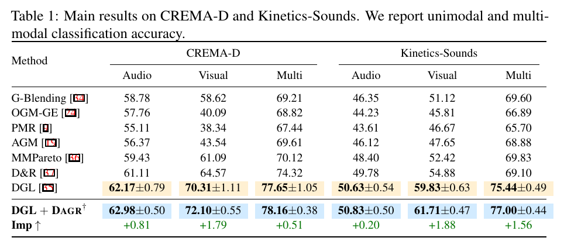
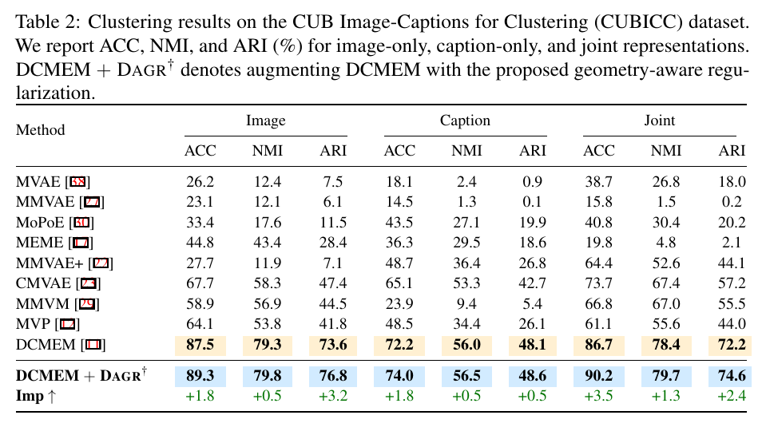
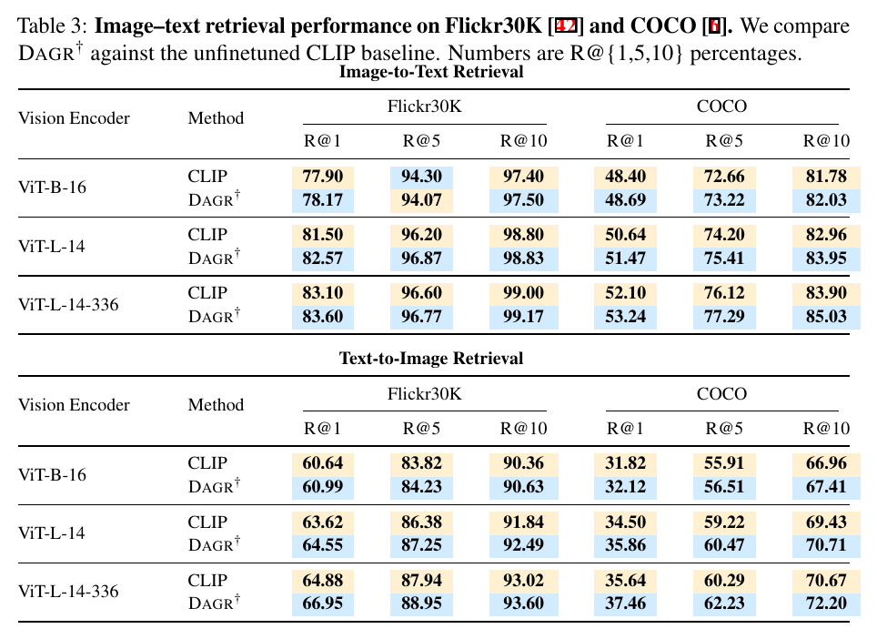
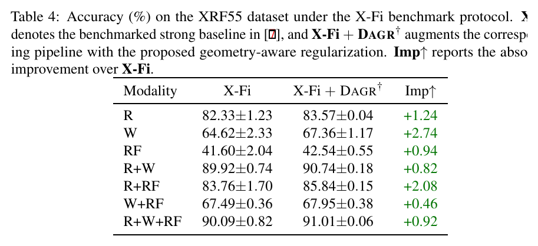
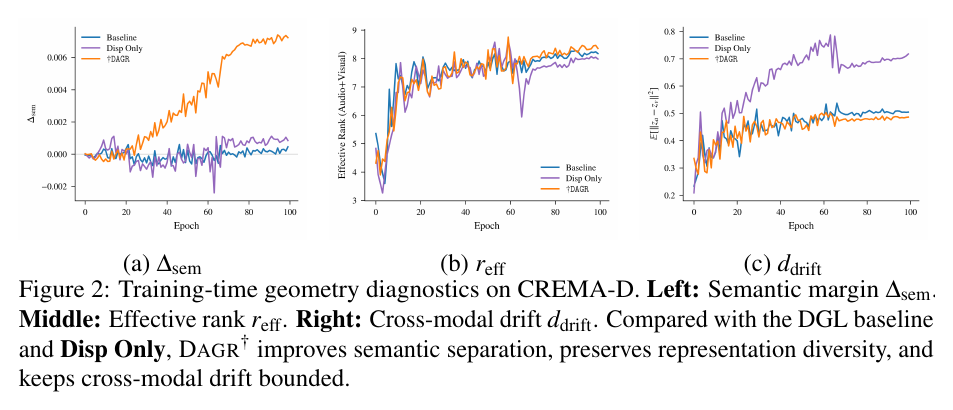
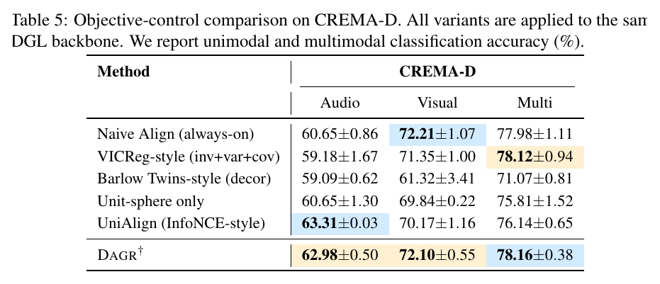
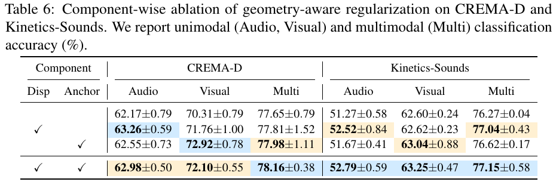

arXiv preprint arXiv:2601.21670, 2026
Publication
When Gradient Optimization Is Not Enough: Dispersive and Anchoring Geometric Regularizer for Multimodal Learning
Zixuan Xia, Hao Wang, Pengcheng Weng, Yanyu Qian, Yangxin Xu, William Dan, Fei Wang
DAGR is a plug-and-play training-time geometric regularizer for multimodal learning. It preserves modality-specific diversity while bounding excessive paired cross-modal drift, improving audio-visual, image-text, and RF-based benchmarks with no inference-time overhead.
Multimodal Learning
University of Bern; Xi'an Jiaotong University; Nanyang Technological University
Overview
Multimodal fusion is often optimized by balancing gradients across modalities. This paper argues that balanced gradients are not enough: even when the task loss is well optimized, the intermediate representation geometry can still be underdetermined. Embeddings may collapse within a modality, or paired samples from different modalities may drift too far apart.
DAGR introduces a training-time geometric regularizer for multimodal learning. It encourages each modality to maintain its own representation diversity while keeping paired cross-modal samples inside a bounded agreement band. The attached arXiv v3 PDF uses the title Diverse via bounded Agreement: Geometric Regularization for Multimodal Fusion; this page keeps the title used in the site publication list.
Core idea: make multimodal representation geometry explicit - diverse within each modality, but bounded across paired modalities.
Main Contributions
- Identifies geometry underdetermination as a failure mode in supervised multimodal fusion.
- Characterizes two representation-level issues: intra-modal collapse and sample-level cross-modal drift.
- Proposes DAGR, a lightweight objective that combines modality-wise dispersion and agreement-band anchoring.
- Demonstrates consistent improvements across audio-visual recognition, image-text clustering and retrieval, and RF-based multimodal perception.
- Keeps deployment simple: DAGR adds no trainable inference module and no inference-time latency.
Method at a Glance
DAGR is applied to normalized intermediate embeddings during training and removed at inference. It contains two complementary terms:
- Dispersion spreads embeddings within each modality, reducing low-rank collapse and increasing effective representation diversity.
- Agreement-band anchoring penalizes paired cross-modal embeddings only when their distance exceeds a tolerance radius, avoiding rigid always-on alignment.
This design differs from methods that simply force all modalities to align. DAGR keeps modality-specific information useful while preventing paired observations from becoming geometrically inconsistent.
Quantitative Results
The paper evaluates DAGR on six benchmarks: CREMA-D, Kinetics-Sounds, CUB Image-Captions for Clustering, Flickr30K, COCO, and XRF55. The following figures and tables are cropped directly from the PDF.

For image-text clustering, DAGR improves the joint CUBICC clustering score while also improving image-only and caption-only representations. This suggests that the regularizer improves semantic organization, not only the final fused output.

For CLIP-based retrieval, DAGR produces consistent gains across Flickr30K and COCO on ViT-B/16, ViT-L/14, and ViT-L/14-336 backbones.

The XRF55 experiment connects this paper to RF-based human perception. Under the X-Fi benchmark protocol, DAGR improves every evaluated modality setting, including radar-only and multimodal fusion inputs.

Geometry Diagnostics and Ablations
The paper also checks whether the gains come from the intended geometry rather than from generic normalization or alignment. On CREMA-D, DAGR improves semantic margin, preserves effective rank, and keeps cross-modal drift bounded.

DAGR is compared with objective controls including always-on alignment, VICReg-style regularization, Barlow Twins-style decorrelation, unit-sphere normalization, and UniAlign-style contrastive alignment.

The component ablation confirms that dispersion and anchoring play complementary roles. Dispersion alone improves representation diversity, while anchoring controls the cross-modal drift that pure dispersion can increase.

Takeaways
- Gradient-level balancing does not fully determine representation geometry.
- DAGR makes geometry an explicit training objective for multimodal learning.
- The method is plug-and-play and incurs no inference-time cost.
- The same bounded-agreement principle transfers across audio-visual, image-text, and RF-based wireless sensing benchmarks.
Resources
- arXiv paper
- Figure 1: t-SNE visualization
- Table 1: audio-visual classification
- Table 2: CUBICC clustering
- Table 3: image-text retrieval
- Table 4: XRF55 results
- Figure 2: geometry diagnostics
- Table 5: objective controls
- Table 6: component ablation
{kind=link}
{kind=link}
{kind=link}
{kind=link}
{kind=link}
{kind=link}
{kind=link}
{kind=link}
Citation
@article{xia2026gradient,
title = {When Gradient Optimization Is Not Enough: Dispersive and Anchoring Geometric Regularizer for Multimodal Learning},
author = {Xia, Zixuan and Wang, Hao and Weng, Pengcheng and Qian, Yanyu and Xu, Yangxin and Dan, William and Wang, Fei},
journal = {arXiv preprint arXiv:2601.21670},
year = {2026}
}